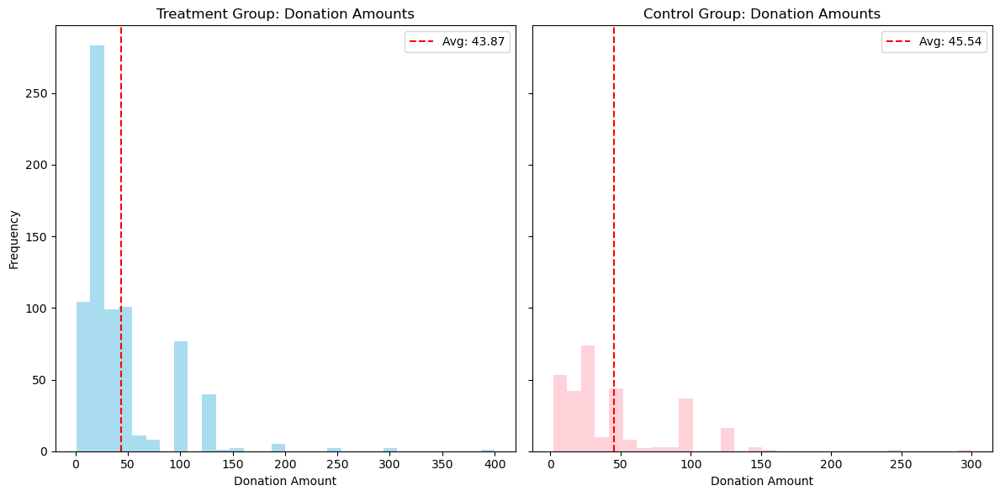

import pandas as pd
import numpy as np
import osdata = pd.read_stata('/home/jovyan/Desktop/UCSD/Spring/MGTA495/lulu_marketing_analytics/blog/Project1/karlan_list_2007.dta')
data| treatment | control | ratio | ratio2 | ratio3 | size | size25 | size50 | size100 | sizeno | ... | redcty | bluecty | pwhite | pblack | page18_39 | ave_hh_sz | median_hhincome | powner | psch_atlstba | pop_propurban | |
|---|---|---|---|---|---|---|---|---|---|---|---|---|---|---|---|---|---|---|---|---|---|
| 0 | 0 | 1 | Control | 0 | 0 | Control | 0 | 0 | 0 | 0 | ... | 0.0 | 1.0 | 0.446493 | 0.527769 | 0.317591 | 2.10 | 28517.0 | 0.499807 | 0.324528 | 1.000000 |
| 1 | 0 | 1 | Control | 0 | 0 | Control | 0 | 0 | 0 | 0 | ... | 1.0 | 0.0 | NaN | NaN | NaN | NaN | NaN | NaN | NaN | NaN |
| 2 | 1 | 0 | 1 | 0 | 0 | $100,000 | 0 | 0 | 1 | 0 | ... | 0.0 | 1.0 | 0.935706 | 0.011948 | 0.276128 | 2.48 | 51175.0 | 0.721941 | 0.192668 | 1.000000 |
| 3 | 1 | 0 | 1 | 0 | 0 | Unstated | 0 | 0 | 0 | 1 | ... | 1.0 | 0.0 | 0.888331 | 0.010760 | 0.279412 | 2.65 | 79269.0 | 0.920431 | 0.412142 | 1.000000 |
| 4 | 1 | 0 | 1 | 0 | 0 | $50,000 | 0 | 1 | 0 | 0 | ... | 0.0 | 1.0 | 0.759014 | 0.127421 | 0.442389 | 1.85 | 40908.0 | 0.416072 | 0.439965 | 1.000000 |
| ... | ... | ... | ... | ... | ... | ... | ... | ... | ... | ... | ... | ... | ... | ... | ... | ... | ... | ... | ... | ... | ... |
| 50078 | 1 | 0 | 1 | 0 | 0 | $25,000 | 1 | 0 | 0 | 0 | ... | 0.0 | 1.0 | 0.872797 | 0.089959 | 0.257265 | 2.13 | 45047.0 | 0.771316 | 0.263744 | 1.000000 |
| 50079 | 0 | 1 | Control | 0 | 0 | Control | 0 | 0 | 0 | 0 | ... | 0.0 | 1.0 | 0.688262 | 0.108889 | 0.288792 | 2.67 | 74655.0 | 0.741931 | 0.586466 | 1.000000 |
| 50080 | 0 | 1 | Control | 0 | 0 | Control | 0 | 0 | 0 | 0 | ... | 1.0 | 0.0 | 0.900000 | 0.021311 | 0.178689 | 2.36 | 26667.0 | 0.778689 | 0.107930 | 0.000000 |
| 50081 | 1 | 0 | 3 | 0 | 1 | Unstated | 0 | 0 | 0 | 1 | ... | 1.0 | 0.0 | 0.917206 | 0.008257 | 0.225619 | 2.57 | 39530.0 | 0.733988 | 0.184768 | 0.634903 |
| 50082 | 1 | 0 | 3 | 0 | 1 | $25,000 | 1 | 0 | 0 | 0 | ... | 0.0 | 1.0 | 0.530023 | 0.074112 | 0.340698 | 3.70 | 48744.0 | 0.717843 | 0.127941 | 0.994181 |
50083 rows × 51 columns
data.to_excel('output_data.xlsx', index=False)treatment_data = data[data['treatment'] == 1]control_data = data[data['treatment'] == 0]from scipy.stats import ttest_ind
# T-test for mrm2
treatment_mrm2 = treatment_data['mrm2'].dropna()
control_mrm2 = control_data['mrm2'].dropna()
t_stat, p_value = ttest_ind(treatment_mrm2, control_mrm2, equal_var=False)
print(f"T-test for mrm2: t-statistic = {t_stat.round(4)}, p-value = {p_value.round(4)}")T-test for mrm2: t-statistic = 0.1195, p-value = 0.9049# 去除缺漏值
treatment_mrm2 = [x for x in treatment_data['mrm2'] if x == x]
control_mrm2 = [x for x in control_data['mrm2'] if x == x]
# 計算樣本數
n1 = len(treatment_mrm2)
n2 = len(control_mrm2)
# 計算平均
mean1 = sum(treatment_mrm2) / n1
mean2 = sum(control_mrm2) / n2
# 計算變異數（無偏估計，分母用 n-1）
var1 = sum((x - mean1)**2 for x in treatment_mrm2) / (n1 - 1)
var2 = sum((x - mean2)**2 for x in control_mrm2) / (n2 - 1)
# 計算標準誤
se = ((var1 / n1) + (var2 / n2)) ** 0.5
# 計算 t 統計量
t_stat = (mean1 - mean2) / se
print(f"T-test (by formula) for mrm2: t-statistic = {round(t_stat, 4)}")T-test (by formula) for mrm2: t-statistic = 0.1195import statsmodels.api as sm
# Linear regression for mrm2
data['intercept'] = 1
model = sm.OLS(data['mrm2'], data[['intercept', 'treatment']], missing='drop').fit()
print(model.summary())
# Extract the t-statistic for the 'treatment' coefficient from the regression model
regression_t_stat = model.tvalues['treatment'].round(4)
print(f"Regression model t-statistic: {regression_t_stat}") OLS Regression Results
==============================================================================
Dep. Variable: mrm2 R-squared: 0.000
Model: OLS Adj. R-squared: -0.000
Method: Least Squares F-statistic: 0.01428
Date: Mon, 21 Apr 2025 Prob (F-statistic): 0.905
Time: 16:22:47 Log-Likelihood: -1.9585e+05
No. Observations: 50082 AIC: 3.917e+05
Df Residuals: 50080 BIC: 3.917e+05
Df Model: 1
Covariance Type: nonrobust
==============================================================================
coef std err t P>|t| [0.025 0.975]
------------------------------------------------------------------------------
intercept 12.9981 0.094 138.979 0.000 12.815 13.181
treatment 0.0137 0.115 0.119 0.905 -0.211 0.238
==============================================================================
Omnibus: 8031.352 Durbin-Watson: 2.004
Prob(Omnibus): 0.000 Jarque-Bera (JB): 12471.135
Skew: 1.163 Prob(JB): 0.00
Kurtosis: 3.751 Cond. No. 3.23
==============================================================================
Notes:
[1] Standard Errors assume that the covariance matrix of the errors is correctly specified.
Regression model t-statistic: 0.1195import matplotlib.pyplot as plt
treatment_proportion = treatment_data['gave'].mean()
control_proportion = control_data['gave'].mean()
plt.bar(['Treatment', 'Control'], [treatment_proportion, control_proportion], color=['pink', 'lightblue'])
plt.ylabel('Proportion of People Who Donated')
plt.title('Proportion of Donors by Group')
plt.show()
# T-test for the binary outcome 'gave'
treatment_gave = treatment_data['gave']
control_gave = control_data['gave']
t_stat_gave, p_value_gave = ttest_ind(treatment_gave, control_gave, equal_var=False)
print(f"T-test for 'gave': t-statistic = {t_stat_gave.round(4)}, p-value = {p_value_gave.round(4)}")
# Bivariate linear regression for 'gave'
gave_model = sm.OLS(data['gave'], data[['intercept', 'treatment']], missing='drop').fit()
print(gave_model.summary())
print(f"Linear regression for 'gave': t-statistic = {gave_model.tvalues['treatment'].round(4)}")T-test for 'gave': t-statistic = 3.2095, p-value = 0.0013
OLS Regression Results
==============================================================================
Dep. Variable: gave R-squared: 0.000
Model: OLS Adj. R-squared: 0.000
Method: Least Squares F-statistic: 9.618
Date: Mon, 21 Apr 2025 Prob (F-statistic): 0.00193
Time: 16:22:47 Log-Likelihood: 26630.
No. Observations: 50083 AIC: -5.326e+04
Df Residuals: 50081 BIC: -5.324e+04
Df Model: 1
Covariance Type: nonrobust
==============================================================================
coef std err t P>|t| [0.025 0.975]
------------------------------------------------------------------------------
intercept 0.0179 0.001 16.225 0.000 0.016 0.020
treatment 0.0042 0.001 3.101 0.002 0.002 0.007
==============================================================================
Omnibus: 59814.280 Durbin-Watson: 2.005
Prob(Omnibus): 0.000 Jarque-Bera (JB): 4317152.727
Skew: 6.740 Prob(JB): 0.00
Kurtosis: 46.440 Cond. No. 3.23
==============================================================================
Notes:
[1] Standard Errors assume that the covariance matrix of the errors is correctly specified.
Linear regression for 'gave': t-statistic = 3.1014print(f"Control Proportion: {control_proportion:.3f}")
print(f"Treatment Proportion: {treatment_proportion:.3f}")Control Proportion: 0.018
Treatment Proportion: 0.022# Probit regression for charitable donation
probit_model = sm.Probit(data['gave'], data[['intercept', 'treatment']])
probit_results = probit_model.fit()
print(probit_results.summary())
# 邊際效應估計
marginal_effects = probit_results.get_margeff()
print(marginal_effects.summary())Optimization terminated successfully.
Current function value: 0.100443
Iterations 7
Probit Regression Results
==============================================================================
Dep. Variable: gave No. Observations: 50083
Model: Probit Df Residuals: 50081
Method: MLE Df Model: 1
Date: Tue, 22 Apr 2025 Pseudo R-squ.: 0.0009783
Time: 00:08:21 Log-Likelihood: -5030.5
converged: True LL-Null: -5035.4
Covariance Type: nonrobust LLR p-value: 0.001696
==============================================================================
coef std err z P>|z| [0.025 0.975]
------------------------------------------------------------------------------
intercept -2.1001 0.023 -90.073 0.000 -2.146 -2.054
treatment 0.0868 0.028 3.113 0.002 0.032 0.141
==============================================================================
Probit Marginal Effects
=====================================
Dep. Variable: gave
Method: dydx
At: overall
==============================================================================
dy/dx std err z P>|z| [0.025 0.975]
------------------------------------------------------------------------------
treatment 0.0043 0.001 3.104 0.002 0.002 0.007
==============================================================================from scipy.stats import ttest_ind
# Task 1: T-tests for match ratio effects on donation likelihood
# Filter data for each match ratio
ratio1_data = treatment_data[treatment_data['ratio'] == 1]
ratio2_data = treatment_data[treatment_data['ratio'] == 2]
ratio3_data = treatment_data[treatment_data['ratio'] == 3]
# Perform t-tests
t_stat_1v2, p_value_1v2 = ttest_ind(ratio1_data['gave'], ratio2_data['gave'], equal_var=False)
t_stat_2v3, p_value_2v3 = ttest_ind(ratio2_data['gave'], ratio3_data['gave'], equal_var=False)
print(f"T-test 1:1 vs 2:1 - t-statistic: {t_stat_1v2:.4f}, p-value: {p_value_1v2:.4f}")
print(f"T-test 2:1 vs 3:1 - t-statistic: {t_stat_2v3:.4f}, p-value: {p_value_2v3:.4f}")
T-test 1:1 vs 2:1 - t-statistic: -0.9650, p-value: 0.3345
T-test 2:1 vs 3:1 - t-statistic: -0.0501, p-value: 0.9600data['ratio1'] = (data['ratio'] == 1).astype(int)
ratio_model = sm.OLS(data['gave'], data[['intercept', 'ratio1', 'ratio2', 'ratio3']], missing='drop').fit()
print(ratio_model.summary()) OLS Regression Results
==============================================================================
Dep. Variable: gave R-squared: 0.000
Model: OLS Adj. R-squared: 0.000
Method: Least Squares F-statistic: 3.665
Date: Tue, 22 Apr 2025 Prob (F-statistic): 0.0118
Time: 11:02:58 Log-Likelihood: 26630.
No. Observations: 50083 AIC: -5.325e+04
Df Residuals: 50079 BIC: -5.322e+04
Df Model: 3
Covariance Type: nonrobust
==============================================================================
coef std err t P>|t| [0.025 0.975]
------------------------------------------------------------------------------
intercept 0.0179 0.001 16.225 0.000 0.016 0.020
ratio1 0.0029 0.002 1.661 0.097 -0.001 0.006
ratio2 0.0048 0.002 2.744 0.006 0.001 0.008
ratio3 0.0049 0.002 2.802 0.005 0.001 0.008
==============================================================================
Omnibus: 59812.754 Durbin-Watson: 2.005
Prob(Omnibus): 0.000 Jarque-Bera (JB): 4316693.217
Skew: 6.740 Prob(JB): 0.00
Kurtosis: 46.438 Cond. No. 4.26
==============================================================================
Notes:
[1] Standard Errors assume that the covariance matrix of the errors is correctly specified.
# Task 3: Response rate differences
# Direct calculation from data
response_rate_1 = ratio1_data['gave'].mean()
response_rate_2 = ratio2_data['gave'].mean()
response_rate_3 = ratio3_data['gave'].mean()
diff_1v2 = response_rate_2 - response_rate_1
diff_2v3 = response_rate_3 - response_rate_2
print(f"Response rate difference 1:1 vs 2:1: {diff_1v2:.4f}")
print(f"Response rate difference 2:1 vs 3:1: {diff_2v3:.4f}")Response rate difference 1:1 vs 2:1: 0.0019
Response rate difference 2:1 vs 3:1: 0.0001# Differences from regression coefficients
coef_diff_1v2 = ratio_model.params['ratio2'] - ratio_model.params['ratio1']
coef_diff_2v3 = ratio_model.params['ratio3'] - ratio_model.params['ratio2']
print(f"Coefficient difference 1:1 vs 2:1: {coef_diff_1v2:.4f}")
print(f"Coefficient difference 2:1 vs 3:1: {coef_diff_2v3:.4f}")Coefficient difference 1:1 vs 2:1: 0.0019
Coefficient difference 2:1 vs 3:1: 0.0001# T-test for donation amount
treatment_amount = treatment_data['amount'].dropna()
control_amount = control_data['amount'].dropna()
t_stat_amount, p_value_amount = ttest_ind(treatment_amount, control_amount, equal_var=False)
print(f"T-test for donation amount: t-statistic = {t_stat_amount:.4f}, p-value = {p_value_amount:.4f}")
# Bivariate linear regression for donation amount
amount_model = sm.OLS(data['amount'], data[['intercept', 'treatment']], missing='drop').fit()
print(amount_model.summary())
print(f"Linear regression for donation amount: t-statistic = {amount_model.tvalues['treatment']:.4f}, p-value = {amount_model.pvalues['treatment']:.4f}")T-test for donation amount: t-statistic = 1.9183, p-value = 0.0551
OLS Regression Results
==============================================================================
Dep. Variable: amount R-squared: 0.000
Model: OLS Adj. R-squared: 0.000
Method: Least Squares F-statistic: 3.461
Date: Mon, 21 Apr 2025 Prob (F-statistic): 0.0628
Time: 16:22:48 Log-Likelihood: -1.7946e+05
No. Observations: 50083 AIC: 3.589e+05
Df Residuals: 50081 BIC: 3.589e+05
Df Model: 1
Covariance Type: nonrobust
==============================================================================
coef std err t P>|t| [0.025 0.975]
------------------------------------------------------------------------------
intercept 0.8133 0.067 12.063 0.000 0.681 0.945
treatment 0.1536 0.083 1.861 0.063 -0.008 0.315
==============================================================================
Omnibus: 96861.113 Durbin-Watson: 2.008
Prob(Omnibus): 0.000 Jarque-Bera (JB): 240735713.635
Skew: 15.297 Prob(JB): 0.00
Kurtosis: 341.269 Cond. No. 3.23
==============================================================================
Notes:
[1] Standard Errors assume that the covariance matrix of the errors is correctly specified.
Linear regression for donation amount: t-statistic = 1.8605, p-value = 0.0628# Filter data to include only those who made a donation
donors_data = data[data['amount'] > 0]
# Regression analysis for donation amount conditional on donating
donors_model = sm.OLS(donors_data['amount'], donors_data[['intercept', 'treatment']], missing='drop').fit()
print(donors_model.summary())
# Interpretation of the treatment coefficient
treatment_coef = donors_model.params['treatment']
print(f"Treatment coefficient: {treatment_coef:.4f}") OLS Regression Results
==============================================================================
Dep. Variable: amount R-squared: 0.000
Model: OLS Adj. R-squared: -0.001
Method: Least Squares F-statistic: 0.3374
Date: Mon, 21 Apr 2025 Prob (F-statistic): 0.561
Time: 16:22:48 Log-Likelihood: -5326.8
No. Observations: 1034 AIC: 1.066e+04
Df Residuals: 1032 BIC: 1.067e+04
Df Model: 1
Covariance Type: nonrobust
==============================================================================
coef std err t P>|t| [0.025 0.975]
------------------------------------------------------------------------------
intercept 45.5403 2.423 18.792 0.000 40.785 50.296
treatment -1.6684 2.872 -0.581 0.561 -7.305 3.968
==============================================================================
Omnibus: 587.258 Durbin-Watson: 2.031
Prob(Omnibus): 0.000 Jarque-Bera (JB): 5623.279
Skew: 2.464 Prob(JB): 0.00
Kurtosis: 13.307 Cond. No. 3.49
==============================================================================
Notes:
[1] Standard Errors assume that the covariance matrix of the errors is correctly specified.
Treatment coefficient: -1.6684
import numpy as np
import matplotlib.pyplot as plt
# 模擬參數
n_control = 100000
n_treatment = 10000
p_control = 0.018
p_treatment = 0.022
# 隨機抽樣
np.random.seed(42)
control_draws = np.random.binomial(n=1, p=p_control, size=n_control)
treatment_draws = np.random.binomial(n=1, p=p_treatment, size=n_treatment)
# 從控制組中隨機抽出與 treatment 組一樣多的樣本
control_sample = np.random.choice(control_draws, size=n_treatment, replace=False)
# 計算逐筆差異
differences = treatment_draws - control_sample
# 計算累積平均
cumulative_avg = np.cumsum(differences) / np.arange(1, len(differences) + 1)
# 繪製圖形
plt.figure(figsize=(10, 6))
plt.plot(cumulative_avg, label="Cumulative mean difference")
plt.axhline(y=0.004, color='red', linestyle='--', label="Theoretical mean difference = 0.004")
plt.title("Simulation: Cumulative Average Difference in Donation Rates)")
plt.xlabel("Sample Size")
plt.ylabel("Cumulative Average Difference")
plt.legend()
plt.grid(True)
plt.tight_layout()
plt.show()# Filter data for donors only
treatment_donors = treatment_data[treatment_data['amount'] > 0]
control_donors = control_data[control_data['amount'] > 0]
# Calculate sample averages
treatment_avg = treatment_donors['amount'].mean()
control_avg = control_donors['amount'].mean()
# Plot histograms
fig, axes = plt.subplots(1, 2, figsize=(12, 6), sharey=True)
# Treatment group histogram
axes[0].hist(treatment_donors['amount'], bins=30, color='skyblue', alpha=0.7)
axes[0].axvline(treatment_avg, color='red', linestyle='--', label=f'Avg: {treatment_avg:.2f}')
axes[0].set_title('Treatment Group: Donation Amounts')
axes[0].set_xlabel('Donation Amount')
axes[0].set_ylabel('Frequency')
axes[0].legend()
# Control group histogram
axes[1].hist(control_donors['amount'], bins=30, color='pink', alpha=0.7)
axes[1].axvline(control_avg, color='red', linestyle='--', label=f'Avg: {control_avg:.2f}')
axes[1].set_title('Control Group: Donation Amounts')
axes[1].set_xlabel('Donation Amount')
axes[1].legend()
plt.tight_layout()
plt.show()
# Define sample sizes
sample_sizes = [50, 200, 500, 1000]
# Initialize a figure for subplots
fig, axes = plt.subplots(2, 2, figsize=(12, 10))
axes = axes.flatten()
# Loop through each sample size
for i, sample_size in enumerate(sample_sizes):
avg_differences = []
# Simulate 1000 averages
for _ in range(1000):
treatment_sample = np.random.choice(treatment_draws, size=sample_size, replace=True)
control_sample = np.random.choice(control_draws, size=sample_size, replace=True)
avg_differences.append(np.mean(treatment_sample - control_sample))
# Plot histogram
axes[i].hist(avg_differences, bins=30, color='pink', edgecolor='black', alpha=0.7)
axes[i].axvline(0, color='red', linestyle='--', label='Zero')
axes[i].set_title(f'Sample Size: {sample_size}')
axes[i].set_xlabel('Average Difference')
axes[i].set_ylabel('Frequency')
axes[i].legend()
plt.tight_layout()
plt.show()